!DOCTYPE html>
Legally Permanent Residents and Naturalized Citizens
Correlation between high income groups and high education degrees
Posted by Casey Alvarado and Shivali Chandra on May 6, 2016
Initially we plotted the education over time.
The number of people over age of 25 with a Bachelor's degree, raw data
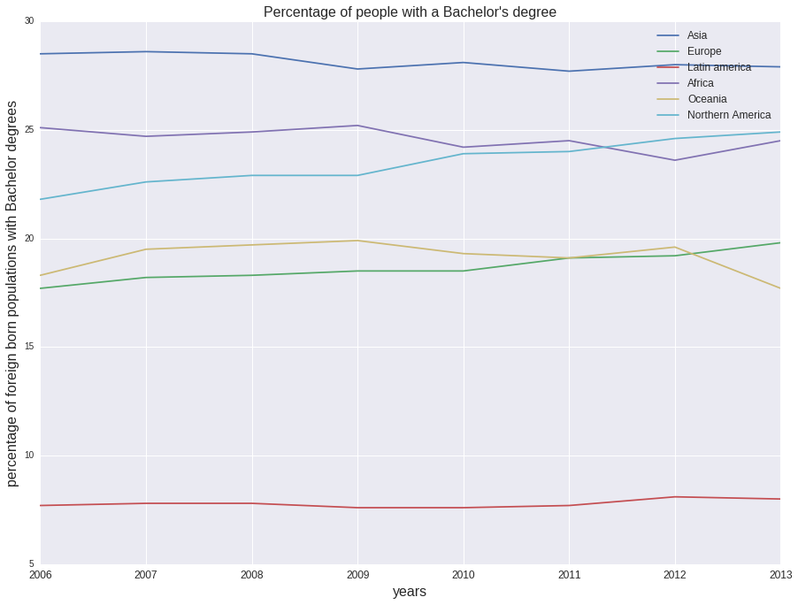
We normalized this data by the number of people that were in this age range. Essentially, we wanted to look at the number of people out of all the people in that age range, that did have a college degree.
The number of people over age of 25 with a Bachelor's degree, normalized by the number of people between the ages of 25 and 84 who could have a Bachelor's degree.
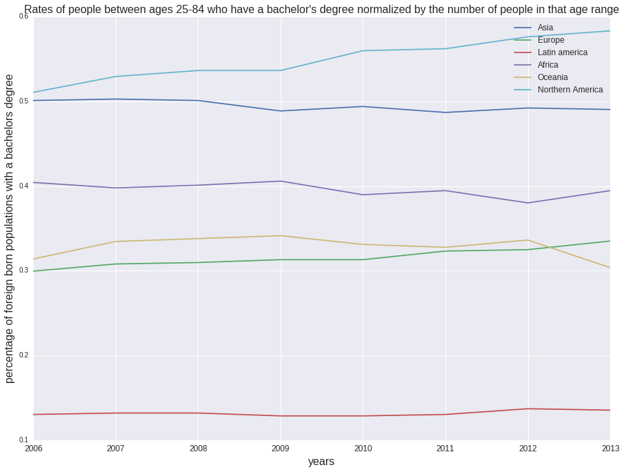
We also looked at people who had a Graduate degree between the ages of 25 and 84. Again, we evaluated the raw data but also normalized it by dividing by the number of people in the age range 25 and 84.
The number of people over age of 25 with a Bachelor's degree, normalized by the number of people between the ages of 25 and 84 who could have a Bachelor's degree. The number of people over age of 25 with a Graduate's degree, normalized by the number of people between the ages of 25 and 84 who could have a Graduate's degree.
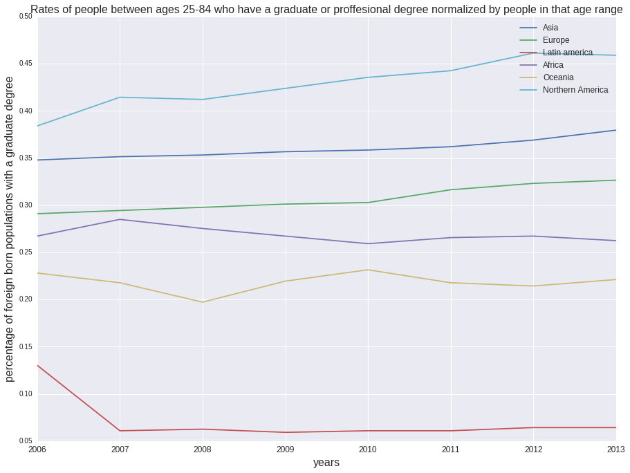
High income populations over time
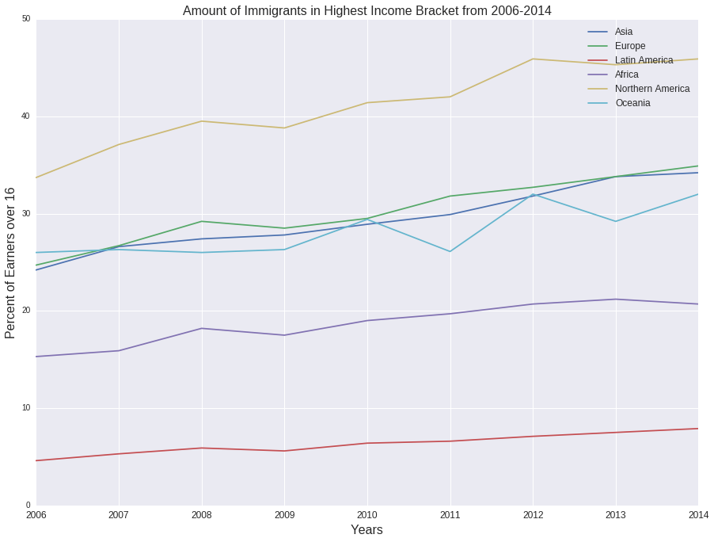
We noticed a particular trend in foreign born populations that had a bachelor or graduate degree were also in the high income group of people. Our theory was that the people with a bachelor's or graduate degree were likely to be in the high income bracket. We wanted to know if this be true for a specific foreign born population or all of them? Therefore we wanted to run a correlation on these two factors.
We ran correlations on the high income data and the people with bachelor's and graduate degrees for each foreign born group. The null hypothesis in our case would be that there does not exist a correlation between the people in the high income group and the people with bachelor's and graduate degrees.
Below is the correlation between the high income group and people with bachelor's degrees (on the left) and people with graduate degrees (on the right) for people born in Asia.
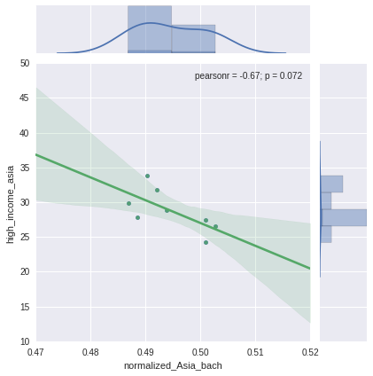
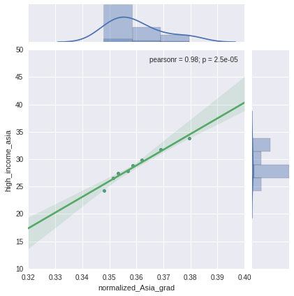
This is interesting. There wasn't a negative correlation between Asians with bachelor's degree and the people in the high income bracket, What does a negative correlation even mean? That they are inversely correlated? How? woah. but there was a strong correlation between Asians with graduate degrees and the people in the high income bracket. We also notices that the pvalue was TINY for this last correlation. The null hypothesis in this case would be that there isn't a correlation between people in the highest income bracket and Asian's with a graduate degree, but with the very small pvalue, we know that the null hypothesis is disproven.
Now, we moved on to run a correlation for Europe.
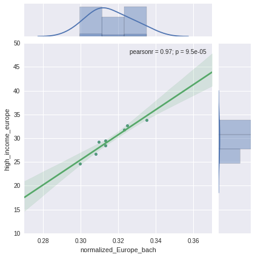
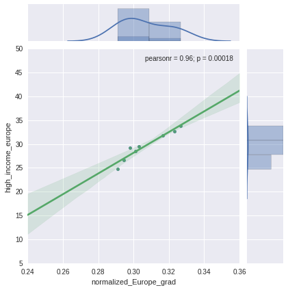
A correlation value of around **0.96** exists for Europeans with both bachelor's and graduate degree. They are so close together. The pvalue for the bachelor's degree correlation in the micro range and the pvalue for the graduate degree was **0.0018**, therefore this is the proof towards the null hypothesis and therefore, there is a correlation between Europeans with both a bachelor's degree and a graduate degree over the age of 25 and the people in the highest income bracket.
Then we moved on to see what was up with Africa.
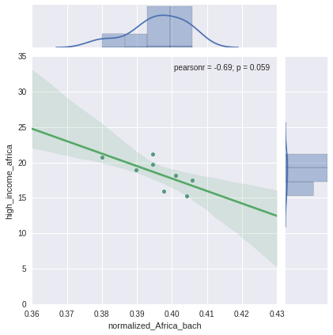
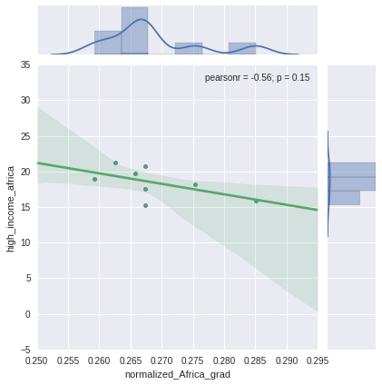
There also exists a negative correlation between the Africans with both bachelor's and graduate degrees and the people in the highest income bracket. Therefore, they are definitely not in the high income group and instead they vary inversely somewhat. This pvalue is around 0.15, this is pretty large. Perhaps this means we need more data before we settle on a conclusion?
Then we explored Oceania.
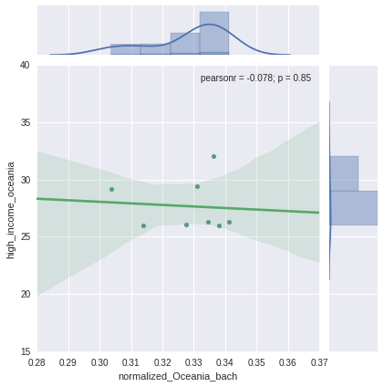
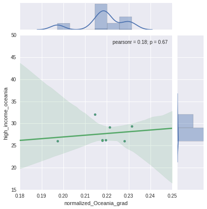
The results for oceania were weird, it just pooped. It flat lines when correlating bachelor's degrees and the people in the highest income bracket. When comparing graduate degrees, it is slightly negative. This is really weird. The pvalue is incredibly high for both of them around **0.6**, therefore, there is not enough evidence to disput the null hypothesis and so the null hypothesis that there is not a correlation between degree and high income is true.
Latin America:
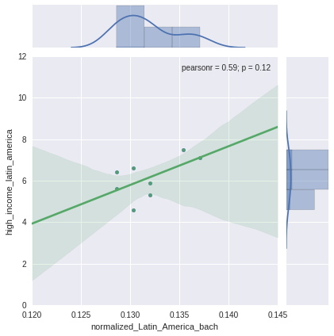
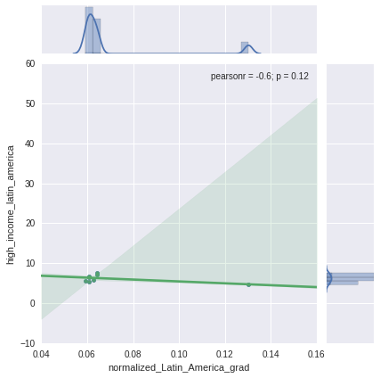
The correlation between Latin Americans with bachelor's degrees and people in the highest income group is a positive once around **0.59**. This could be considered a positive correlation. The pvalue is at 0.10, which is a little high to really dispute the null hypothesis. Therefore, I am not sure I can draw a conclusion on this because there is a positive strong correlation, but a slightly high pvalue.
Interestingly enough the data for Latin America's getting graduate degrees is in a clump at the bottom of the high income bracket data. There is a small negative correlation. The pvalue is also a little larger than necessary to strongly disput the null hypothesis.
Finally, Northern America.
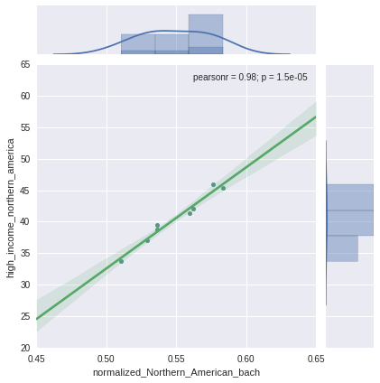
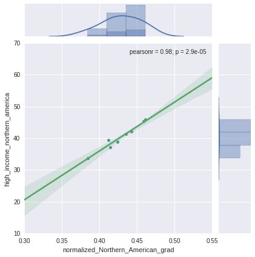
This is like a perfect line. There is a very strong positive correlation between Northern Americans with both graduate and bachelor's degrees and the people in the high income bracket. These two spaces are very common for Northern Americans. The pvalue is also super tiny, which means it disputs the null hypothesis that there isn't a correlation between the two.